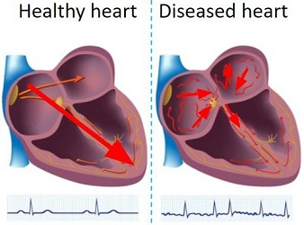
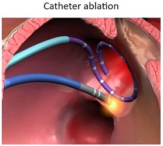
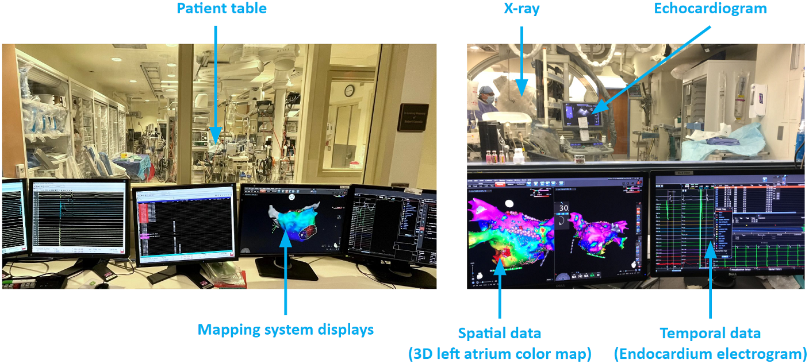
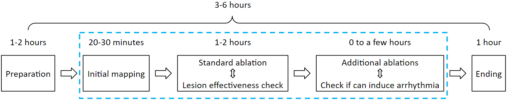

What is atrial arrhythmia
A healthy heart has a regular sequence of activations, while a diseased heart has irregular activations, which leads to insufficient plumbing of blood. In the United States, it is estimated that 12 million people will have atrial fibrillation in 2030. It contributes to about 160 thousand deaths each year. Symptoms include fast heartbeat, chest pain, dizziness, shortness of breath, etc.
The main treatments are: Use medicines to control the heart’s rhythm and rate; Surgery; Medicine and healthy lifestyle changes to manage atrial fibrillation risk factors. Catheter ablation is a minimally invasive surgery, which catheters are inserted into the left atrium for mapping and ablation. The tip of the ablation catheter can generate heat to kill diseased cells, to restore normal activation.
Here are some photos of the catheter ablation operating room. Thers is the patient table behind the glass where the physician operate the procedure. Technician work with the physician via the mapping system. The mapping system displays spatial and temporal data to help the physician find arrhythmia source locations.
Catheters are passed through a vein to reach the heart. They may be inserted in the groin, shoulder or neck. The 3D mapping system takes in electrograms from the catheters and creates colored maps to help the physician pinpoint the abnormal tissue. As illustrates in the figure below, there are ablations create a line of block to the abnormal activations from the pulmonary veins, and there is a cluster of ablations stop abnormal activations from a focal source.

A typical ablation procedure runs for 3 to 6 hours. The first 1 to 2 hours is the preparation step: The patient is getting sedation anesthesia. Physician, nurses and technicians prepare the hardware and software. Then the physician inserts catheters into the patient's left atrium. Then an initial map is acquired. Usually this will be a voltage map, which displays scar tissue locations. Based on scar tissue locations, standard ablations such as pulmonary vein isolation is done first, this takes 1 to 2 hours. If that does not terminate arrhythmia, then additional ablations will be needed: it will be a back and forth of ablation and mapping until arrhythmia can no longer be induced. This step can take a few hours. At the end of the procedure, catheters are removed, and nurses clean up the operating room. This step takes about an hour.
Atrial arrhythmia ablation challenges
Atrial arrhythmia ablation is challenging. Arrhythmia recurrence within 12 months is about 45%. There are mainly 3 challenges to build an ablation guidance system. The first challenge is about data sampling. A map usually consists of 2,000 electrode samples. One problem is that these samples are temporally asynchronous: Sampling a map is done region by region, however, the pattern of the rhythm can change during the 10-20 minutes of mapping. Another problem is that these samples are spatially non-uniform: Maneuvering and keeping the catheter stable at a location is technically challenging, as a result, some regions overlap while others disjoint.